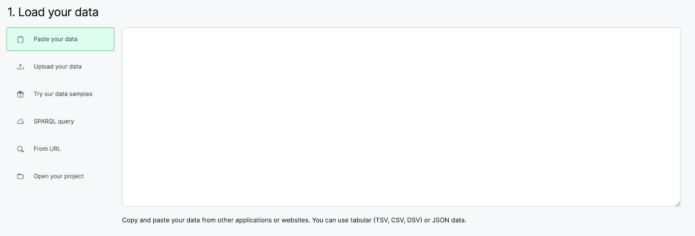
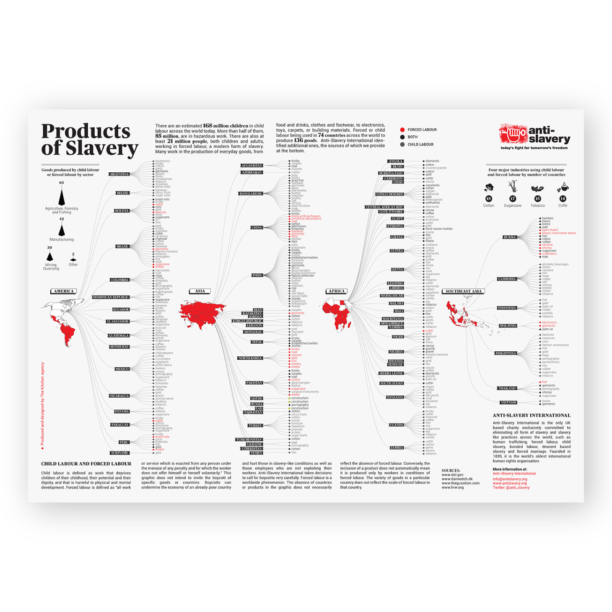
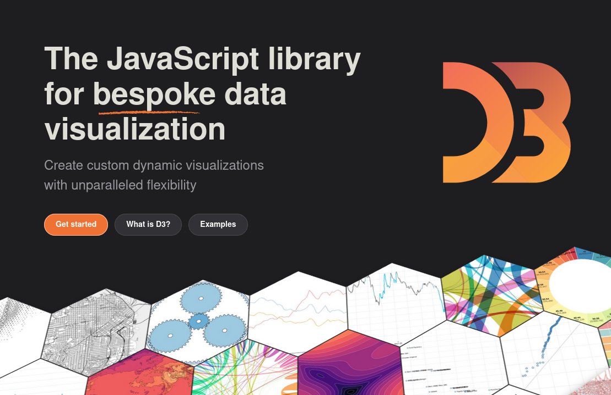
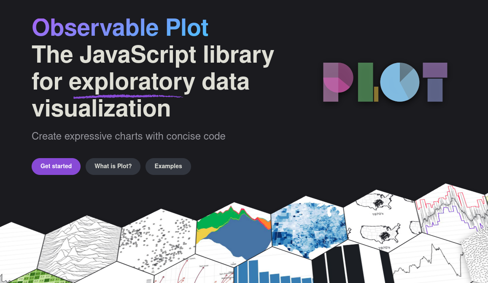

<!DOCTYPE html>
<html lang="en">
  <head>
    <meta charset="utf-8" />
    <meta name="viewport" content="width=device-width, initial-scale=1.0, maximum-scale=1.0, user-scalable=no" />

    <title>w9-7AAVDM52-advanced_visualisation</title>
    <link rel="stylesheet" href="dist/reveal.css" />
    <link rel="stylesheet" href="dist/theme/black.css" id="theme" />
    <link rel="stylesheet" href="plugin/highlight/zenburn.css" />
	<link rel="stylesheet" href="css/layout.css" />
	<link rel="stylesheet" href="plugin/customcontrols/style.css">
	<link rel="stylesheet" href="plugin/chalkboard/style.css">

	<link rel="stylesheet" href="plugin/reveal-pointer/pointer.css" />


    <script defer src="dist/fontawesome/all.min.js"></script>

	<script type="text/javascript">
		var forgetPop = true;
		function onPopState(event) {
			if(forgetPop){
				forgetPop = false;
			} else {
				parent.postMessage(event.target.location.href, "app://obsidian.md");
			}
        }
		window.onpopstate = onPopState;
		window.onmessage = event => {
			if(event.data == "reload"){
				window.document.location.reload();
			}
			forgetPop = true;
		}

		function fitElements(){
			const itemsToFit = document.getElementsByClassName('fitText');
			for (const item in itemsToFit) {
				if (Object.hasOwnProperty.call(itemsToFit, item)) {
					var element = itemsToFit[item];
					fitElement(element,1, 1000);
					element.classList.remove('fitText');
				}
			}
		}

		function fitElement(element, start, end){

			let size = (end + start) / 2;
			element.style.fontSize = `${size}px`;

			if(Math.abs(start - end) < 1){
				while(element.scrollHeight > element.offsetHeight){
					size--;
					element.style.fontSize = `${size}px`;
				}
				return;
			}

			if(element.scrollHeight > element.offsetHeight){
				fitElement(element, start, size);
			} else {
				fitElement(element, size, end);
			}		
		}


		document.onreadystatechange = () => {
			fitElements();
			if (document.readyState === 'complete') {
				if (window.location.href.indexOf("?export") != -1){
					parent.postMessage(event.target.location.href, "app://obsidian.md");
				}
				if (window.location.href.indexOf("print-pdf") != -1){
					let stateCheck = setInterval(() => {
						clearInterval(stateCheck);
						window.print();
					}, 250);
				}
			}
	};


        </script>
  </head>
  <body>
    <div class="reveal">
      <div class="slides"><section  data-markdown><script type="text/template"><!-- .slide: class="drop" -->
<div class="" style="position: absolute; left: 0px; top: 0px; height: 1199px; width: 1920px; min-height: 1199px; display: flex; flex-direction: column; align-items: center; justify-content: center" absolute="true">

# Advanced Visualization Techniques
## Data Visualisation ― week 9


[Dr Daniel Chávez Heras](https://movingpixel.net/)

[7AAVDM52](https://keats.kcl.ac.uk/course/view.php?id=108839)

2023-24
</div>

<aside class="notes"><p>This week the focus shifts towards more complex and nuanced ways of representing data. We aim to dig deeper and understand when and how to employ advanced chart types like scatter plots, heat-maps, and network diagrams. But also explore how custom interactive data visualisations are built from scratch, how they afford different forms of interactions by living online and being shared with others.</p>
</aside></script></section><section  data-markdown><script type="text/template"><!-- .slide: class="has-dark-background drop" data-background-color="#2b1804" -->
<div class="" style="position: absolute; left: 0px; top: 0px; height: 1199px; width: 1920px; min-height: 1199px; display: flex; flex-direction: column; align-items: center; justify-content: center" absolute="true">

# The road ahead

<div class="callout callout-color8">
<div class="callout-title">
<div class="callout-icon">

<i class="fas fa-list" ></i>


</div>
<div class="callout-title-inner">

In today's lecture:  

</div>
</div>
<div class="callout-content">

1. Quick recap of of RAWGraphs

2. Introducing D3.js

3. Examples

4. Creating interactive visualisations

5. Questions

</div>
</div>
</div></script></section><section  data-markdown><script type="text/template"><!-- .slide: class="has-dark-background drop" data-background-color="#304f5e" -->
<div class="" style="position: absolute; left: 0px; top: 0px; height: 1199px; width: 1920px; min-height: 1199px; display: flex; flex-direction: column; align-items: center; justify-content: center" absolute="true">

# 1. RAW Graphs recap

<i class="fas fa-check-square fa-4x" ></i>
</div></script></section><section  data-markdown><script type="text/template"><!-- .slide: class="drop" -->
<div class="" style="position: absolute; left: 0px; top: 0px; height: 1199px; width: 1920px; min-height: 1199px; display: flex; flex-direction: column; align-items: center; justify-content: center" absolute="true">

1. Load your data
2. Choose a chart
3. Map your data dimensions to the visual variables of the chart
4. Tune your visualisation and export
</div></script></section><section  data-markdown><script type="text/template"><!-- .slide: class="drop" -->
<div class="" style="position: absolute; left: 0px; top: 0px; height: 1199px; width: 1920px; min-height: 1199px; display: flex; flex-direction: column; align-items: center; justify-content: center" absolute="true">




Data can be loaded in the following ways:

- Paste from a table
- <mark>Load a file in tabular format</mark>
- <mark>From a URL</mark>
- From a SPARQL query
- From one of our data samples
- <mark>Opening a .rawgraphs project</mark>
</div></script></section><section  data-markdown><script type="text/template"><!-- .slide: class="drop" -->
<div class="" style="position: absolute; left: 0px; top: 0px; height: 1199px; width: 1920px; min-height: 1199px; display: flex; flex-direction: column; align-items: center; justify-content: center" absolute="true">

RAWGraphs accepts only a single table!
To load from a file, the accepted formats are:

- .tsv
- <mark>.csv</mark>
- .dsv
- .json
</div></script></section><section  data-markdown><script type="text/template"><!-- .slide: class="drop" -->
<div class="" style="position: absolute; left: 0px; top: 0px; height: 1199px; width: 1920px; min-height: 1199px; display: flex; flex-direction: column; align-items: center; justify-content: center" absolute="true">



source: https://rawgraphs.github.io/gallery_project/test-2/
</div></script></section><section  data-markdown><script type="text/template"><!-- .slide: class="has-dark-background drop" data-background-color="#304f5e" -->
<div class="" style="position: absolute; left: 0px; top: 0px; height: 1199px; width: 1920px; min-height: 1199px; display: flex; flex-direction: column; align-items: center; justify-content: center" absolute="true">

# 2. Introduction to D3.js

<i class="fab fa-js fa-4x" ></i>
</div></script></section><section  data-markdown><script type="text/template"><!-- .slide: class="drop" -->
<div class="" style="position: absolute; left: 0px; top: 0px; height: 1199px; width: 1920px; min-height: 1199px; display: flex; flex-direction: column; align-items: center; justify-content: center" absolute="true">




>D3 (or [D3.js](https://d3js.org/)) is a free, open-source JavaScript library for visualizing data that allows data to drive the creation and control of dynamic and interactive visualizations on the web.
</div></script></section><section  data-markdown><script type="text/template"><!-- .slide: class="drop" -->
<div class="" style="position: absolute; left: 0px; top: 0px; height: 1199px; width: 1920px; min-height: 1199px; display: flex; flex-direction: column; align-items: center; justify-content: center" absolute="true">

## Why D3?

- <mark>low-level</mark> toolbox
- focused on <mark>customisation</mark> and flexibility
- <mark>dynamic</mark> visualisations
- for the <mark>web</mark> and its standards (HTML, CSS, SVG)

See: [what is D3](https://d3js.org/what-is-d3)?
</div>

<aside class="notes"><ol>
<li>Static data visualisation</li>
<li>Dynamic data visualisation</li>
</ol>
<ul>
<li>D3 stands for Data-Driven Documents, highlighting its unique approach to directly manipulating the Document Object Model (DOM) based on data.</li>
<li><strong>Links</strong>: <a href="https://d3js.org/">D3.js Official Website</a></li>
<li><a href="https://developer.mozilla.org/en-US/docs/Web/API/Document_Object_Model">DOM</a>connects websites to scripts or programming languages by representing websites as a hierarchy of objects in memory, these objects can then be accessed programatically or modified</li>
</ul>
</aside></script></section><section  data-markdown><script type="text/template"><!-- .slide: class="drop" -->
<div class="" style="position: absolute; left: 0px; top: 0px; height: 1199px; width: 1920px; min-height: 1199px; display: flex; flex-direction: column; align-items: center; justify-content: center" absolute="true">


Dynamic data visualisation
- [dragging](https://d3js.org/d3-drag)([example](https://observablehq.com/@d3/drag-collisions))
- [brushing](https://d3js.org/d3-brush) ([example](https://observablehq.com/@d3/brush-snapping-transitions))
- [zooming](https://d3js.org/d3-zoom)([example](https://observablehq.com/@d3/drag-zoom))
</div>

<aside class="notes"><p>interaction usually assumes a web interface, e.g. clicking, selecting, dragging, zooming, dropping, etc.</p>
</aside></script></section><section  data-markdown><script type="text/template"><!-- .slide: class="has-dark-background drop" data-background-color="#304f5e" -->
<div class="" style="position: absolute; left: 0px; top: 0px; height: 1199px; width: 1920px; min-height: 1199px; display: flex; flex-direction: column; align-items: center; justify-content: center" absolute="true">

# 3. Examples

<i class="fas fa-eye fa-4x" ></i>
</div></script></section><section  data-markdown><script type="text/template"><!-- .slide: class="drop" -->
<div class="" style="position: absolute; left: 0px; top: 0px; height: 1199px; width: 1920px; min-height: 1199px; display: flex; flex-direction: column; align-items: center; justify-content: center" absolute="true">

## Examples

- [Interpolation animation](https://observablehq.com/@d3/streamgraph-transitions?intent=fork)
- [Time series animation](https://observablehq.com/@mbostock/the-wealth-health-of-nations)
- [Sequence + sunburst chart](https://observablehq.com/@kerryrodden/sequences-sunburst) (see also [zoomable icicle](https://observablehq.com/@d3/zoomable-icicle?intent=fork))
- [Mapping projections](https://observablehq.com/@d3/versor-dragging?intent=fork) (see Jason Davis' _[Rotate the World](https://www.jasondavies.com/maps/rotate/)_)
- [Heat maps](https://observablehq.com/@mbostock/electric-usage-2019)
- [Line charts](https://observablehq.com/@d3/multi-line-chart/2?intent=fork) (also see [tooltips](https://observablehq.com/@d3/line-with-tooltip/2?intent=fork))
- [Occlusion](https://observablehq.com/@d3/occlusion)
- [Maps](https://observablehq.com/@d3/star-map?intent=fork)
</div></script></section><section  data-markdown><script type="text/template"><!-- .slide: class="has-dark-background drop" data-background-color="#304f5e" -->
<div class="" style="position: absolute; left: 0px; top: 0px; height: 1199px; width: 1920px; min-height: 1199px; display: flex; flex-direction: column; align-items: center; justify-content: center" absolute="true">

# 4. Creating interactive visualisations

<i class="fas fa-pencil-ruler fa-4x" ></i>
</div></script></section><section  data-markdown><script type="text/template"><!-- .slide: class="drop" -->
<div class="" style="position: absolute; left: 0px; top: 0px; height: 1199px; width: 1920px; min-height: 1199px; display: flex; flex-direction: column; align-items: center; justify-content: center" absolute="true">

## Getting started

>The fastest way to get started (and get help) with D3 is on [Observable](https://observablehq.com)! D3 is available by default in notebooks as part of Observable’s standard library.

Starter templates:
- [Area chart](https://observablehq.com/@d3/area-chart/2?intent=fork)
- [Bar chart](https://observablehq.com/@d3/bar-chart/2?intent=fork)
- [Donut chart](https://observablehq.com/@d3/donut-chart/2?intent=fork)
- [Histogram](https://observablehq.com/@d3/histogram/2?intent=fork)
- [Line chart](https://observablehq.com/@d3/line-chart/2?intent=fork)

[Sample datasets](https://observablehq.com/@observablehq/sample-datasets)
<mark>Observable notebooks </mark>([example](https://observablehq.com/@d3/zoomable-icicle))
</div>

<aside class="notes"><p>show how to access and attach data and manipulate notebooks.</p>
</aside></script></section><section  data-markdown><script type="text/template"><!-- .slide: class="drop" -->
<div class="" style="position: absolute; left: 0px; top: 0px; height: 1199px; width: 1920px; min-height: 1199px; display: flex; flex-direction: column; align-items: center; justify-content: center" absolute="true">




>**Observable Plot** is a free, open-source, JavaScript library for visualizing tabular data, focused on accelerating exploratory data analysis. It has a concise, memorable, yet expressive interface, featuring [scales](https://observablehq.com/plot/features/scales) and [layered marks](https://observablehq.com/plot/features/marks) in the _grammar of graphics_ style popularized by [Leland Wilkinson](https://en.wikipedia.org/wiki/Leland_Wilkinson) and [Hadley Wickham](https://en.wikipedia.org/wiki/Hadley_Wickham) and inspired by the earlier ideas of [Jacques Bertin](https://en.wikipedia.org/wiki/Jacques_Bertin). And there are [plenty of examples](https://observablehq.com/@observablehq/plot-gallery) to learn from and copy-paste.
</div>

<aside class="notes"><p>high-level sister library to D3</p>
</aside></script></section><section  data-markdown><script type="text/template"><!-- .slide: class="drop" -->
<div class="" style="position: absolute; left: 0px; top: 0px; height: 1199px; width: 1920px; min-height: 1199px; display: flex; flex-direction: column; align-items: center; justify-content: center" absolute="true">

## More resources

- [Learn D3: Introduction](https://observablehq.com/@d3/learn-d3)
- [A taste of Observable](https://observablehq.com/@observablehq/a-taste-of-observable)
- [Observable & creative coding](https://observablehq.com/@makio135/creative-coding)
</div></script></section><section  data-markdown><script type="text/template"><!-- .slide: class="has-dark-background drop" data-background-color="#2b1804" -->
<div class="" style="position: absolute; left: 0px; top: 0px; height: 1199px; width: 1920px; min-height: 1199px; display: flex; flex-direction: column; align-items: center; justify-content: center" absolute="true">

# The road behind

<div class="callout callout-color2">
<div class="callout-title">
<div class="callout-icon">

<i class="fas fa-fire-alt" ></i>


</div>
<div class="callout-title-inner">

In summary:

</div>
</div>
<div class="callout-content">

- Static and dynamic data visualisation.

- What is D3.js and why use it

- Examples of D3.js in action

- Getting started with interactive data visualisation

</div>
</div>
</div></script></section><section  data-markdown><script type="text/template"><!-- .slide: class="drop" -->
<div class="" style="position: absolute; left: 0px; top: 0px; height: 1199px; width: 1920px; min-height: 1199px; display: flex; flex-direction: column; align-items: center; justify-content: center" absolute="true">

# 5. Questions?
<i class="far fa-question-circle fa-4x" ></i>
</div>

<aside class="notes"><p>bye!</p>
</aside></script></section></div>
    </div>

    <script src="dist/reveal.js"></script>

    <script src="plugin/markdown/markdown.js"></script>
    <script src="plugin/highlight/highlight.js"></script>
    <script src="plugin/zoom/zoom.js"></script>
    <script src="plugin/notes/notes.js"></script>
    <script src="plugin/math/math.js"></script>
	<script src="plugin/mermaid/mermaid.js"></script>
	<script src="plugin/chart/chart.min.js"></script>
	<script src="plugin/chart/plugin.js"></script>
	<script src="plugin/menu/menu.js"></script>
	<script src="plugin/customcontrols/plugin.js"></script>
	<script src="plugin/chalkboard/plugin.js"></script>
	<script src="plugin/reveal-pointer/pointer.js"></script>
	<script src="plugin/elapsed-time-bar/elapsed-time-bar.js"></script>

    <script>
      function extend() {
        var target = {};
        for (var i = 0; i < arguments.length; i++) {
          var source = arguments[i];
          for (var key in source) {
            if (source.hasOwnProperty(key)) {
              target[key] = source[key];
            }
          }
        }
        return target;
      }

	  function isLight(color) {
		let hex = color.replace('#', '');

		// convert #fff => #ffffff
		if(hex.length == 3){
			hex = `${hex[0]}${hex[0]}${hex[1]}${hex[1]}${hex[2]}${hex[2]}`;
		}

		const c_r = parseInt(hex.substr(0, 2), 16);
		const c_g = parseInt(hex.substr(2, 2), 16);
		const c_b = parseInt(hex.substr(4, 2), 16);
		const brightness = ((c_r * 299) + (c_g * 587) + (c_b * 114)) / 1000;
		return brightness > 155;
	}

	var bgColor = getComputedStyle(document.documentElement).getPropertyValue('--r-background-color').trim();
	var isLight = isLight(bgColor);

	if(isLight){
		document.body.classList.add('has-light-background');
	} else {
		document.body.classList.add('has-dark-background');
	}

      // default options to init reveal.js
      var defaultOptions = {
        controls: true,
        progress: true,
        history: true,
        center: true,
        transition: 'default', // none/fade/slide/convex/concave/zoom
        plugins: [
          RevealMarkdown,
          RevealHighlight,
          RevealZoom,
          RevealNotes,
          RevealMath.MathJax3,
		  RevealMermaid,
		  RevealChart,
		  RevealCustomControls,
		  RevealMenu,
	      RevealPointer,
		  RevealChalkboard, 
		  ElapsedTimeBar
        ],


    	allottedTime: 120 * 1000,

		mathjax3: {
			mathjax: 'plugin/math/mathjax/tex-mml-chtml.js',
		},
		markdown: {
		  gfm: true,
		  mangle: true,
		  pedantic: false,
		  smartLists: false,
		  smartypants: false,
		},

		mermaid: {
			theme: isLight ? 'default' : 'dark',
		},

		customcontrols: {
			controls: [
				{id: 'toggle-overview',
				title: 'Toggle overview (O)',
				icon: '<i class="fa fa-th"></i>',
				action: 'Reveal.toggleOverview();'
				},
				{ icon: '<i class="fa fa-pen-square"></i>',
				title: 'Toggle chalkboard (B)',
				action: 'RevealChalkboard.toggleChalkboard();'
				},
				{ icon: '<i class="fa fa-pen"></i>',
				title: 'Toggle notes canvas (C)',
				action: 'RevealChalkboard.toggleNotesCanvas();'
				},
			]
		},
		menu: {
			loadIcons: false
		}
      };

      // options from URL query string
      var queryOptions = Reveal().getQueryHash() || {};

      var options = extend(defaultOptions, {"width":1920,"height":1199,"margin":0,"controls":true,"progress":true,"slideNumber":true,"transition":"slide","transitionSpeed":"default"}, queryOptions);
    </script>

    <script>
      Reveal.initialize(options);
    </script>
  </body>

  <!-- created with Advanced Slides -->
</html>
